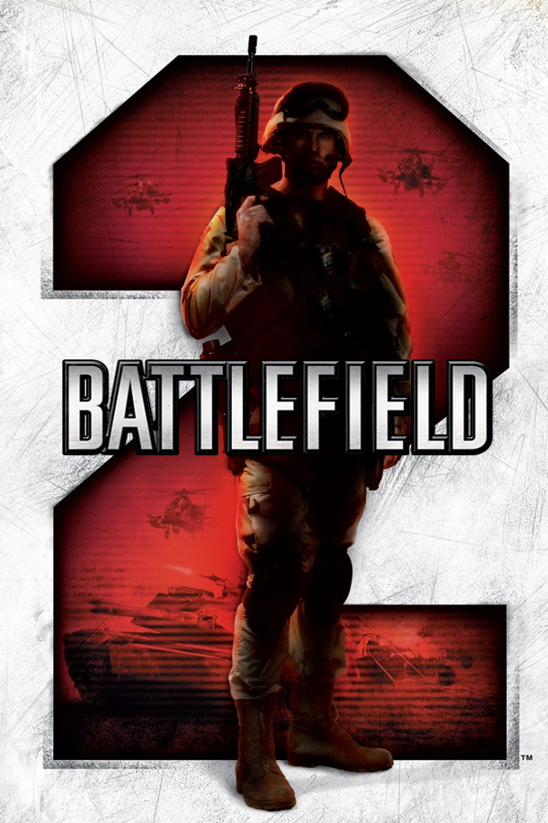

|  | |
| Playtime | Not Played |
| Last Activity | Never |
| Added | 5/4/2025 15:22:25 |
| Modified | 5/4/2025 15:26:20 |
| Completion Status | Not Played |
| Library | Playnite |
| Source | |
| Platform | $PC (Windows) |
| Release Date | 6/21/2005 |
| Community Score | |
| Critic Score | 93 |
| User Score | |
| Genre | Action FPS |
| Developer | DICE DICE Canada |
| Publisher | Electronic Arts |
| Feature | Controller Support Multiplayer Single Player |
| Links | PCGamingWiki Official site HowLongToBeat IGDB SteamDB StrategyWiki MobyGames Wikipedia WSGF |
| Tag | Automobile Contemporary Direct control First-Person Flight Helicopter Naval/watercraft Realistic Real-Time Refractor 2 Tank Transport Truck |
Battlefield 2 is a 2005 first-person shooter game developed by Digital Illusions CE and published by Electronic Arts for Microsoft Windows. It was released in June 2005 as the third game in the Battlefield franchise.
Players fight in a modern battlefield, using modern weapon systems. Battlefield 2 is a first-person shooter with strategy and tactical shooter elements.
The single-player aspect features missions that involve clashes between U.S. Marines, China and the fictional Middle Eastern Coalition. The multiplayer aspect of the game allows players to organize into squads that come under the leadership of a single commander to promote teamwork. The story takes place in the early 21st century during a fictional world war between various power blocs: China, the European Union, the fictional Middle Eastern Coalition (MEC), Russia and the United States. The game takes place in different fronts, as the Middle East and China are being invaded by US and EU forces, and the United States is being invaded by Chinese and MEC forces.
On June 30, 2014, the multiplayer master server was shut down alongside other GameSpy-powered titles, although it can still be played online throughout fan-created mods with alternative servers. In 2017, Electronic Arts demanded the takedown of the modified versions of Battlefield 2 on alternate servers, distributed by a group known as "Revive Network", as infringement of their copyrights.
Battlefield 2 is a sequel to Battlefield Vietnam and introduces several modifications to the gameplay mechanics of its predecessor. Several new gameplay features emphasize teamwork and collaboration. The new game engine includes improved physics, dynamic lighting, and more realistic material penetration.
Battlefield 2 is a multiplayer video game played via the Internet or on a local area network. A single-player mode with three difficulty levels is included. Both player modes use the same maps and use Battlefield's conquest game mode. Single-player mode allows 16 computer-controlled players while Internet mode allows up to 64 players. Players can choose to play as the United States Marine Corps, the People's Liberation Army, or the "Middle Eastern Coalition". Additional factions are playable through the expansion packs, such as the European Union. Progress in the game is made via promotions which allow additional weapons to be unlocked. By playing the game on ranked servers, players are able to add to their global player statistics. These statistics are used to award promotions and other achievements.
In Battlefield 2, players are divided into two opposing teams, with the factions determined by the selected map. The primary objective is to reduce the opposing team's tickets, which represent the army's capacity to reinforce their position on the battlefield. Each team has a limited number of tickets, and each casualty decreases the available total. Control points, represented by flags, serve as spawn points and are strategically important on the map. If one team controls a significant majority of the control points, the opposing team's tickets gradually decrease regardless of casualties. A round ends when one team's tickets are depleted, the round timer expires, or if a team holds no control points and has no remaining soldiers on the battlefield.
Battlefield 2's two game modes are Conquest and Cooperative. Cooperative games emphasize teamwork, prioritizing group achievement over individual victory. The only difference between the two modes is that Cooperative includes computer-controlled players, whilst Conquest allows only human players. Results from Cooperative mode do not count toward global player statistics.
In Battlefield 2, as with previous Battlefield titles, players are able to select from a variety of infantry classes. Each class of soldier is equipped with different weaponry appropriate to their role in the battle. Assault soldiers, for example, are general-purpose infantry with grenade-launcher equipped assault-rifles and extra armor, Medics carry first-aid equipment such as a field defibrillator, and Anti-Tank troopers are equipped with missiles which are effective against heavy armor.
Players are able to choose a class at the start of a match, or between dying and respawn. Players can change their class by picking up a 'kit' from the body of an incapacitated soldier, regardless of whether the soldier is friendly or enemy. For example, an Assault soldier can become a Medic by acquiring a fallen Medic's kit. Player classes are categorized into 'Heavy' and 'Light' types: Heavy classes have reduced damage to the torso but lower stamina, while Light classes have standard damage multipliers and higher stamina, allowing for longer sprinting.
Within the infantry class, there are three support classes with special abilities. Within the infantry, three support classes have unique abilities: the Engineer can repair vehicles using his wrench; the Medic can revive and heal teammates using defibrillator paddles; and the Support can resupply ammunition using ammunition bags. When any of these classes occupies a vehicle, nearby personnel and vehicles can receive repairs, healing, or resupply, provided they are within close proximity.
Battlefield 2 continues the series’ signature vehicle-based gameplay, allowing players to enter and control a wide variety of vehicles. There are many different types of vehicles playable in Battlefield 2, all based on real-life vehicles used by the militaries of different countries.
In contrast to Battlefield 1942, Battlefield 2 has only one purely water-based vehicle, the rigid-inflatable boat; however, the three APCs can travel in water as well. The game was designed with a counterbalance system in which each vehicle type has specific vulnerabilities, creating a dynamic similar to rock-paper-scissors. For example, mobile anti-air was intended to effectively destroy helicopters, but are vulnerable against opposing tanks. Included within this relationship are stationary defenses such as light machine guns and anti-aircraft/TOW emplacements. The availability and number of certain vehicles are dependent on the map and its size as well as control points captured. Also, more vehicles become available to be used on the maps of expansion/booster packs. (see Maps). The USS Essex is the only naval ship featured in BF2, featuring two spawn points and aircraft spawn points, and is not drivable or destroyable, except for its Phalanx turrets.
Players are able to form squads of up to six soldiers in order to more effectively work as a team. Up to nine squads are permitted per team; each squad has a number (automatically assigned) and name (usually a phonetic alphabet letter) for identification. Members of a squad have the ability to communicate with one another via Battlefield 2's integrated voice over IP (VoIP) system.
Squad leaders may assign their squad a variety of objectives (for example, moving to or attacking a specific location). Orders may also be given by the team's commander. Squad leaders are able to issue requests for commander assets (such as artillery fire) and have a direct VoIP channel to the commander.
Members of a squad may spawn near their squad leader, provided that the leader is not dead (or incapacitated), and that the team holds at least one control point. This feature allows squads to more quickly regroup after taking casualties.
The commander position is an exclusive role played by one member of each team. Any member of a team may apply for the position, but priority is given to players of higher rank.
The commander alone has access to the "commander screen", an interface similar to that of a real-time strategy game. This allows the commander an overview of the battlefield as a whole, or zoom in and view parts of the map in real-time. The commander also has control of the various commander assets, which include artillery strikes, vehicle and supply drops, and UAVs. They can deploy them to assist their team. The commander can communicate with squads either by sending orders, or via VoIP voice communication. These tools allow the commander to strategically coordinate their forces on the battlefield.
A commander may resign at any point, freeing the position for other members of their team; they may also be forcibly removed by a successful mutiny vote conducted by their team (provided the server allows mutiny votes). Although the commander does not gain points by normal methods (kills, flag captures, etc.), their score is doubled at the end of the round if their team wins.
The commander position would be seen again in Battlefield 2142 and Battlefield 4.
Players can earn awards (ribbons, badges, and medals) for certain in-game accomplishments. Badges and ribbons are the easiest to obtain, while medals are usually much harder, requiring more extensive play. As players ascend through the ranks they will gain the ability to unlock certain weapons. Each time a player is promoted to an eligible rank, they are given the opportunity to unlock one of seven unlockable weapons, one corresponding to each class, which they may subsequently use in place of the standard weapon for the given class.
A built-in game recorder records battles for subsequent replay. These files can be downloaded from a server which supports BattleRecorder directly after their respective game. Recorded battle files are around 1 to 8 megabytes in size and are played within the Battlefield 2 engine. Camera angles can be changed (free roaming & selected player), as well as the speed, though there is no rewind capability. Files can be exported to AVI format. The Battlefield Recorder has facilitated the creation of various machinima. Usage of the PunkBuster service is mandatory for all official ranked Battlefield 2 servers, but optional for unranked servers.
Battlefield 2 offers 15 maps for the players to play but shipped with 12. These maps are diverse, ranging from swamps such as Songhua Stalemate, to urban areas such as Strike at Karkand, to an unfinished dam known as Kubra Dam. The USMC is present in all maps and faces against either the MEC or the PLA depending on the map. The PLA is present in Far East theaters such as Dragon Valley and Daqing Oilfields. MEC is present in Middle East theaters such as Gulf of Oman and Zatar Wetlands. Including the expansion and booster packs, the total number of maps available in the Battlefield 2 series increases to 29.
Battlefield 2 maps have 3 variations, each suited for a certain number of players. Each map has 16, 32, and 64 player-suggested variations in which the area of battlefield or playing field is relatively small, medium, and large, respectively. The only exceptions to this are Wake Island 2007, which is locked at 64-player size and the Euro Force maps, Operation Smokescreen, Great Wall, and Taraba Quarry, which have no 64-player size. 32 and 64 player maps are unavailable to offline players from retailers, but an option is given to download 64 Single player AI bot mods. Other contrasts between these variations other than the size are the number and position of control points and availability of vehicles. As a result, the gameplay of the map is different depending on the variation.
The game is set in 2007 during a world war between various power blocs: the United States, aided by the European Union, is at war against Russia, China and the fictional Middle Eastern Coalition (MEC), aided by various insurgents.
There is no given reason as to how or why the war broke out. In-game, the European Union and the United States fight China and the MEC. It is mentioned in-game that the US and EU are allies and the EU has negotiated a truce with Russia, but it is unknown if China and the MEC are allies. The game also takes place in different fronts, as the Middle East and China are being invaded by US and EU forces, and the United States is being invaded by Chinese and MEC forces.
Battlefield 2's first expansion pack, Special Forces, first began its development sometime during or shortly before the release of the original Battlefield 2, and was worked on by DICE's Canadian division. Battlefield producer, Mike Doran, commented in August 2005 that "The truth is that work on Battlefield 2: Special Forces began several months ago." It was officially announced on July 14, 2005 and released on November 21 of the same year. The focus of the development was infantry-based combat as opposed to vehicle-centric combat from the original. As such, most of the additional content in the expansion pack can only be used by or for infantry.
The expansion pack provides eight maps, 6 playable factions, and ten more vehicles such as the AH-64D Apache and Mi-35 Hind, though all jets have been removed. In addition to these new contents, players have access to new equipment such as night vision goggles, tear gas, gas masks, zip lines and grappling hooks which can alter gameplay. There are eight more small arms weapons available such as the G36K/E and FN SCAR L/H and several weapons from the original are replaced. The expansion offers more awards in the form of badges, ribbons, and medals that players can earn. Finally, many of the weapons from the expansion may be used in the original Battlefield 2.
Booster packs are additional content released for Battlefield 2 that are currently available for free download, and as with Special Forces, they were developed by DICE Canada. The booster packs were later available in retail form as the Booster Pack Collection, containing a DVD which features these packs, as well as being included in "The Complete Collection", containing a DVD with both the original game and all of the expansions/booster packs.
Booster packs substantially expand the content to the game, but are different from expansion packs because they are intended to add to the original gameplay and not stand on their own (such as Special Forces does). The booster packs include new maps, vehicles, and a new European Union faction.
The two booster packs were included free of charge in the 1.50 update released on September 1, 2009.
The soundtrack of Battlefield 2 consists of 18 tracks composed and created by Fredrik Englund, David Tallroth, and Jonas Östholm.
The game received widespread critical acclaim, garnering an aggregate score of 91/100 from 55 reviews on Metacritic. It received five stars out of five from publications Yahoo! Games, GameSpy, X-Play and Computer Gaming World. PC Gamer awarded it 94%, stating, "Its finely tuned maps and balanced gameplay prove that you can improve on perfection," and honored it as Game of the Year. GameSpot rated the game 9.3 out of 10 claiming that "when you experience Battlefield 2 like it's meant to be played, with everyone working together and using real-time voice chat, the game quickly becomes unlike anything else that you've played before."
Some of the lower scores were reactions to the large amount of bugs and glitches in the initial release, including crash to desktop bugs and network problems. For example, Gaming Nexus (who awarded the game an 8.7 out of 10) reported, "I’ve had many cool experiences playing it and a lot of 'did I just see that' moments but all of that is crapped on by the bugs and quirks in the game."
GamesRadar approved of the game, awarding a 90%, but added a disclaimer that the gaming experience is best "if your machine is up to it". GameSpot's review agreed with the high system requirements noting that "the load times are one of the biggest gripes that we have, as you will spend quite a bit of time waiting for a game to start up, even on high-end machines...also a bit demanding in the hardware department."
Battlefield 2 sold 1.2 million copies in its first month after release. Total sales by July 2006 were 2,225,000. It received a "Gold" sales award from the Entertainment and Leisure Software Publishers Association (ELSPA), indicating sales of at least 200,000 copies in the United Kingdom.
Battlefield 2 won PC Gamer US's "Best Multiplayer Game 2005" and "Game of the Year 2005" awards. The magazine's Dan Stapleton wrote, "Few other games in the history of the medium have so effectively captured the visceral feeling of modern military combat in an urban environment". The editors of Computer Games Magazine presented Battlefield 2 with their 2005 awards for "Best Action Game" and "Best Multiplayer", and named it the year's second-best computer game overall. They called it "perhaps the most thrilling example of how far shooters have come in the last few years."
During the 9th Annual Interactive Achievement Awards, the Academy of Interactive Arts & Sciences awarded Battlefield 2 with "First-Person Action Game of the Year" and "Outstanding Achievement in Online Gameplay", along with a nomination for "Computer Game of the Year".